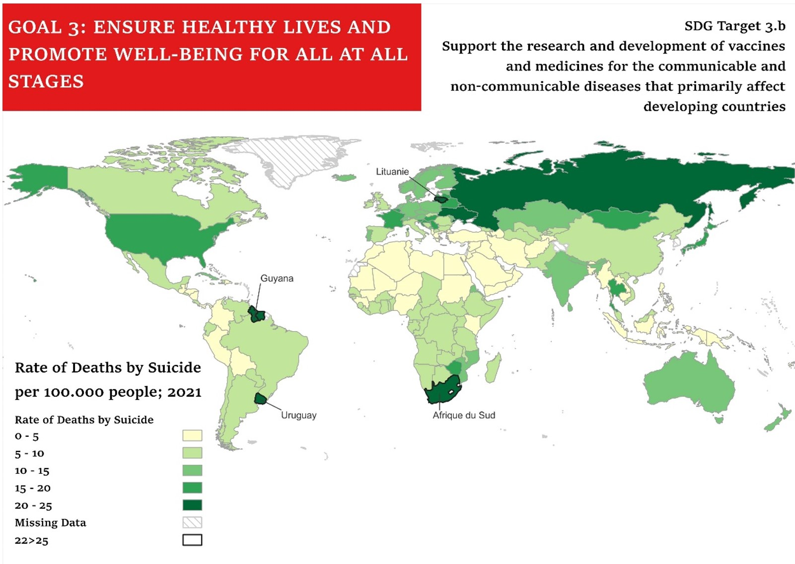

Choropleth Map
What is a Choropleth Map?
A choropleth map is a thematic map that makes use of different shades of colors to represent the value of specific variables across distinct regions. There are advantages and disadvantages to choropleth maps: they can be useful to represent specific set of data, such as population density or average income, they catch the reader’s attention, and they can be relatively easy to read. On the other hand, they do not account for variation within the same country. It seems like the distribution inside a country is homogeneous.
With this choropleth map I wanted to observe the rate of death by suicide per 100.000 people for both sexes. This topic links well with my psychology studies and could give useful inshight on the social and economical state of the different countries, as well as providing information on the health care system specificall for the availability of mental health support.
The SDG Indicators I chose
- SDG goal = Goal 3: Ensure healthy lives and promote well-being for all at all ages
- Target = 3.b Support the research and development of vaccines and medicines for the communicable and non-communicable diseases that primarily affect developing countries, provide access to affordable essential medicines and vaccines, in accordance with the Doha Declaration on the TRIPS Agreement and Public Health, which affirms the right of developing countries to use to the full the provisions in the Agreement on Trade-Related Aspects of Intellectual Property Rights regarding flexibilities to protect public health, and, in particular, provide access to medicines for all
- Indicator = 3.4.2
Leaflet
Look at the interactive map! Hover on the countries and discover their data
Vector Map

During the course of this lab, I had teh opportunity to